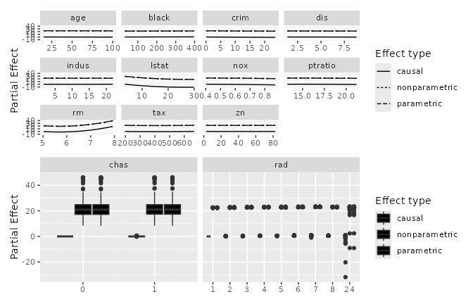
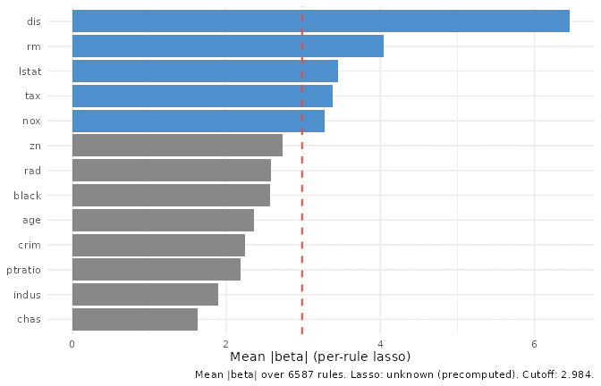
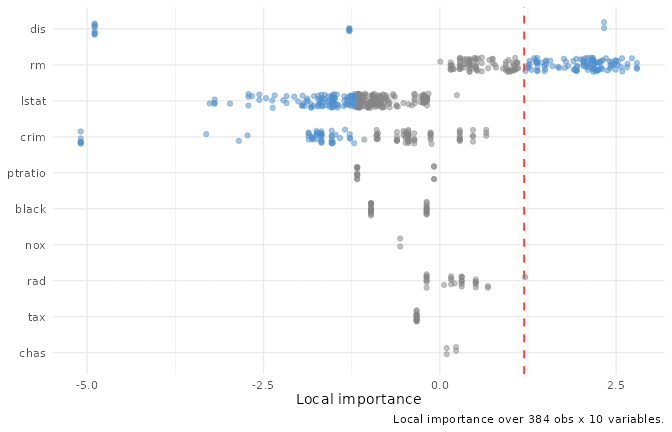
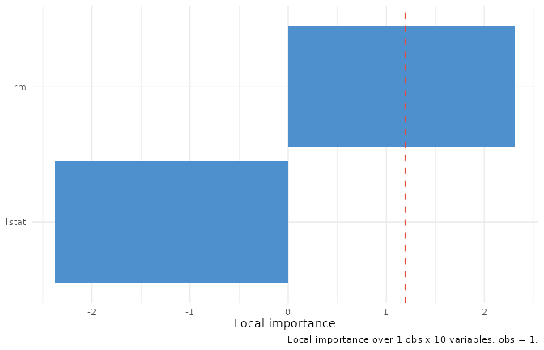
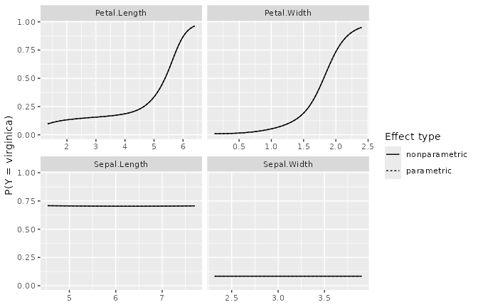
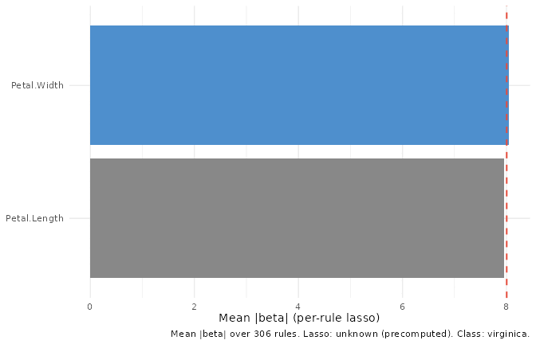
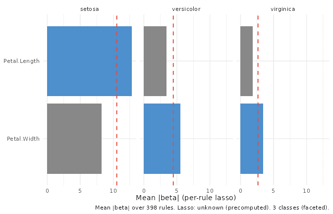
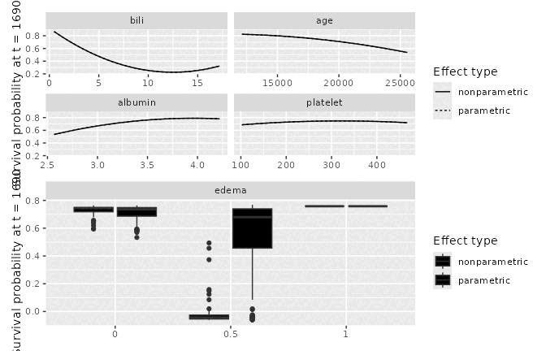

library(ggplot2)
# Match the pattern used by the regression/survival vignettes: try the
# installed package first, fall back to pkgload::load_all() for the
# R CMD check vignette rebuild where the package isn't yet on
# .libPaths(). All varPro calls below are ::-qualified, so no
# library(varPro) is needed.
if (requireNamespace("ggRandomForests", quietly = TRUE)) {
library(ggRandomForests)
} else if (requireNamespace("pkgload", quietly = TRUE)) {
pkgload::load_all(export_all = FALSE, helpers = FALSE,
attach_testthat = FALSE)
} else {
stop("Install ggRandomForests (or pkgload for dev builds) to render this vignette.")
}What varPro is
Random-forest variable importance has, for two decades, mostly meant permutation importance: shuffle a column, measure the drop in OOB accuracy, repeat. It works, but the score is computed against artificially modified data that never appeared in the training set, and when predictors are correlated the shuffled column is an implausible counterfactual, not a neutral baseline. Knockoff-style methods clean up some of that, but they introduce their own synthetic features and rely on explicit distributional assumptions about the predictors.
varPro (Lu and Ishwaran 2024) takes a different path: one grounded entirely in observed data. Think of each decision tree as a long chain of “if/then” clauses. varPro harvests those clauses as rules, and for each rule it identifies a specific region of the predictor space where a handful of variables jointly constrain the response. To measure one variable’s contribution, it compares a local estimator (the response summary restricted to that rule’s region) against a “released” estimator where the constraint on the tested variable has been lifted. That comparison, averaged over rules and trees, is the variable’s importance z-score. Every observation used in the contrast is real training data; nothing is permuted, nothing is synthesised.
The “release” metaphor is the right one. Imagine holding a rope at several points along its length (the rule constraints). Releasing your grip at one point (while keeping the others in place) tells you how taut that section was. Variables that go slack when released were carrying load; variables that stay taut were redundant given the rest.
Operationally, varPro’s guided splitting steers tree growth so that rules concentrate in informative regions, and the subsequent rule harvesting step selects the rules that survived the importance pre-filter. Variables below a noise threshold are dropped before reporting (the importance z is pre-filtered), so the final ranking contains only variables that earned a seat at the table (see the varPro tools reference for worked implementation details). Split-weights encode each variable’s relative importance at each tree node, propagating that signal through the release-rule contrasts and into the partial-dependence curves.
Cross-validation via cv.varpro() returns three views of the importance ranking: $imp (the default, point-estimate ranking), $imp.conserve (one-SD rule: only variables whose lower confidence bound is positive), and $imp.liberal (any variable with a positive point estimate). The conservative cut is the right default when you want to hand a short list to a collaborator; the liberal cut is better for exploratory screening when you’d rather miss nothing.
For classification, the importance decomposes into an $unconditional score (averaged over all classes) and per-class $conditional.z scores. When a variable separates one class from the others but is uninformative overall, the unconditional z can be near zero while a single conditional z is large; the conditional view catches that. One-hot consolidation via get.orgvimp() and get.topvars() maps the per-level scores back to the original factor, so downstream reporting stays on familiar ground.
That core machinery feeds five supervised ggRandomForests wrappers. gg_varpro() summarises the per-tree importance distribution. gg_beta_varpro() refines those release-rule contrasts with a per-rule lasso. gg_partial_varpro() turns the release machinery into partial-dependence curves. gg_isopro() scores observations for anomaly using an isolation-forest variant. gg_ivarpro() computes per-observation local importance. A separate set of unsupervised wrappers — gg_udependent(), gg_beta_uvarpro(), and gg_sdependent() — reads structure off a uvarpro() fit that has no response at all; those get their own walk-through in the companion uvarpro vignette.
This vignette walks the five supervised wrappers on three worked examples: a regression problem (Boston housing), a classification problem (iris, binary and multi-class), and a survival problem (PBC). The closing section is a one-page reference matrix mapping each wrapper to the forest families it supports.
Regression: Boston housing
We start with the Boston housing data: 506 census tracts, 13 numeric predictors, median home value as the response.
data("Boston", package = "MASS")
set.seed(20260527L)
# Precomputed offline (see precompute_varpro.R); falls back to a live fit.
v_boston <- if (is.null(.vp$v_boston)) {
varPro::varpro(medv ~ ., data = Boston, ntree = 50)
} else {
.vp$v_boston
}
# A varpro fit is a large list; a bare `v_boston` would render every
# component, including the full per-rule `$results` table. Show its
# structure instead: one line per component.
str(v_boston, max.level = 1)List of 13
$ rf :List of 49
..- attr(*, "class")= chr [1:3] "rfsrc" "grow" "regr"
$ split.weight : Named num [1:13] 0.01303 0.00279 0.00254 0.02425 0.06228 ...
..- attr(*, "names")= chr [1:13] "crim" "zn" "indus" "chas" ...
$ split.weight.raw:List of 2
$ max.rules.tree : num 150
$ max.tree : num 50
$ results :'data.frame': 5730 obs. of 5 variables:
$ xvar.org.names : chr [1:13] "crim" "zn" "indus" "chas" ...
$ xvar.names : chr [1:13] "crim" "zn" "indus" "chas" ...
$ yvar.names : chr "medv"
$ x :'data.frame': 506 obs. of 13 variables:
..- attr(*, "hotencode")= logi FALSE
..- attr(*, "xvar.names")= chr [1:13] "crim" "zn" "indus" "chas" ...
$ y : num [1:506] 24 21.6 34.7 33.4 36.2 28.7 22.9 27.1 16.5 18.9 ...
$ y.org : num [1:506] 24 21.6 34.7 33.4 36.2 28.7 22.9 27.1 16.5 18.9 ...
$ family : chr "regr"
- attr(*, "class")= chr "varpro"varpro() builds the importance machinery (release rules, per-tree scores, the splitweight vector) once. Every subsequent figure in this section reads off that single fit. The formula interface is intentional: varPro is model-independent in the sense that it doesn’t assume a linear or parametric relationship between predictors and response, but it does require you to name a response so the guided splitting has something to optimise toward.
Per-tree importance with gg_varpro()
The first question varPro answers is the same one permutation importance answers: which variables matter, ranked. gg_varpro() extracts the per-tree importance scores and draws their distribution as a horizontal boxplot, one row per variable, sorted by median z-score, with the variables above a configurable cutoff (default 0.79) highlighted. Read the spread, not just the position: a tight box means every tree agrees on that variable.
The narrow boxes near the top are the variables varPro is confident about: every tree agrees they matter. Wide boxes that straddle the cutoff line are the ones to look at twice; the forest disagrees with itself. That disagreement isn’t noise to suppress: it can mean the variable matters in some rule regions but not others, which is exactly the kind of structured heterogeneity that model-independent methods are built to detect. Variables that fall entirely below the cutoff were pre-filtered by the importance z threshold; they’re gone before the plot is drawn.
Partial dependence with gg_partial_varpro()
The ranking view tells you which variables matter. Partial dependence asks the next question: how does the response change with a variable, holding the others fixed? gg_partial_varpro() wraps varPro::partialpro() and returns a tidy frame of parametric, non-parametric, and causal partial-dependence curves.
# Precomputed offline (see precompute_varpro.R); falls back to a live fit.
gg_pd <- if (is.null(.vp$pd_boston)) {
gg_partial_varpro(object = v_boston)
} else {
.vp$pd_boston
}
plot(gg_pd)
Each panel is a single predictor. The three curves correspond to the three estimators varPro carries (parametric, non-parametric, and causal); read them as a sensitivity analysis. When all three agree, you have a stable signal; when the causal curve diverges from the others, that’s a hint that the variable’s observed relationship with the response may be partly driven by its correlation with other predictors in the rule regions, not by a direct effect.
Because partialpro() operates within the local neighborhoods defined by the release rules, these curves reflect what happens in the part of the predictor space the forest actually visited, not a global extrapolation from a fitted model. That is both a strength (no out-of-distribution extrapolation) and a limit (sparse regions of the predictor space will have wider effective intervals, even if the plot doesn’t always show them explicitly).
Per-rule lasso refinement with gg_beta_varpro()
gg_varpro()’s ranking is built from the release-rule contrast. gg_beta_varpro() re-asks the question variable by variable inside each rule: it fits a one-predictor lasso of the response on the released variable, restricted to the OOB observations in that rule’s region. The fitted coefficient (call it a “local β”) captures the variable’s linear effect within that rule’s neighborhood, not globally. Aggregating mean(|β|) across rules gives one number per variable: a regression-coefficient-flavoured importance, not a VIMP score, and not a global slope.
That distinction matters in practice. A variable with a strong nonlinear global relationship may have locally small β values inside any single rule (the local-standardisation step within each rule normalises the scale), but many rules will fire on it, so the aggregated mean is still large. Conversely, a variable with a nearly linear global effect will concentrate most of its weight in a handful of rules, and the between-rule variability in β will be low.
Because beta.varpro() is expensive (a glmnet per rule), the wrapper accepts a pre-computed beta_fit so you can iterate on selection, cutoff, or class choice without re-fitting.
# Precomputed offline (see precompute_varpro.R); falls back to a live fit.
b_boston <- if (is.null(.vp$b_boston)) {
varPro::beta.varpro(v_boston)
} else {
.vp$b_boston
}
plot(gg_beta_varpro(v_boston, beta_fit = b_boston))
Compare against gg_varpro() above. Disagreement is the diagnostic signal: a variable that ranks high here but low there is one whose local linear effect inside many rules is real even when the release contrast is modest.
Unsupervised views: see the uvarpro vignette
The wrappers so far all score variables against a response. varPro also has an unsupervised mode: varPro::uvarpro() grows a forest on the predictor matrix alone, and three more wrappers read off that fit — gg_udependent() draws the cross-variable dependency network, gg_beta_uvarpro() ranks the variables by their entropy contribution, and gg_sdependent() marks the cut between signal and noise. Because there is no outcome in play, they get their own short walk-through in the companion uvarpro vignette.
Anomaly scoring with gg_isopro()
Variable importance is one axis; observation outlierness is another. gg_isopro() wraps varPro::isopro() (an isolation-forest variant that scores how anomalous each training row looks) and renders the result as a ranked elbow plus a density of the scores. The score is on [0, 1]; the wrapper’s convention is “higher = more anomalous” (opposite of varPro’s native polarity; the wrapper flips it for consistency).
The elbow flags rows that diverge from the bulk. Pair with the domain: anomalous in feature space is not the same as wrong, but it’s often where the most interesting cases live. In a regression context, a high-scoring row is one that the isolation forest isolated quickly because its feature combination is rare; it may or may not be an outlier in the response. Anomaly scoring and residual analysis answer different questions, and it’s worth doing both.
Note that isopro() scores are not calibrated to a universal scale: a score of 0.7 in one dataset is not comparable to 0.7 in another. What matters is the relative ordering within a dataset and the shape of the elbow: a sharp kink at a small number of observations is a cleaner signal than a gradual slope that never levels off.
Local importance with gg_ivarpro()
The wrappers so far aggregate across observations. gg_ivarpro() does the opposite: it returns one value per (observation, variable) pair, capturing how much variable v contributed to predicting observation i. The aggregate view is a distribution of those local importances per variable; the per-observation view is a horizontal bar of one row’s local importances across variables.
ivarpro() is the most expensive call in varPro, so the wrapper accepts a pre-computed ivarpro_fit for reuse across views.
plot(gg_ivarpro(v_boston, ivarpro_fit = iv_boston))
plot(gg_ivarpro(v_boston, ivarpro_fit = iv_boston, which_obs = 1L))
The distribution view tells you which variables drive predictions across observations. The per-observation view answers the same question for a specific case, useful for explaining one prediction back to whoever asked.
The per-observation importance is computed by replaying the release-rule contrasts restricted to the rules that fire for that observation. It is not a Shapley value, but it shares the local-attribution spirit: each bar shows how much that variable’s release shifted the local estimator for this specific row, averaged over the rules that covered it. Cases that are well-represented in the training data (dense rule coverage) will have sharper attribution than cases in sparse regions of the predictor space.
Classification: iris
Iris is a small data set (150 rows, four predictors, three response classes), and that’s a feature here, not a flaw: every figure renders in under a second, and the structure is well-understood enough that any strange behaviour stands out. It is also a good stress-test for the conditional importance path: petal length and petal width separate setosa from everything else very cleanly, but the versicolor/virginica boundary is much softer. A method that only reports unconditional importance would lump both cases together; the conditional decomposition should show the asymmetry.
Two fits: a binary problem (drop setosa, positive class = virginica) and the full three-class problem.
iris_binary <- iris[iris$Species != "setosa", ]
iris_binary$Species <- droplevels(iris_binary$Species)
set.seed(20260527L)
# Precomputed offline (see precompute_varpro.R); falls back to a live fit.
v_iris_binary <- if (is.null(.vp$v_iris_binary)) {
varPro::varpro(Species ~ ., data = iris_binary, ntree = 50)
} else {
.vp$v_iris_binary
}Class-conditional importance with gg_varpro(conditional = TRUE)
For a classification forest, gg_varpro() can split the importance view into one facet per class. Variables keep the unconditional sort order so rows line up across facets; read along a row to see which class a variable is informative for.
The conditional importance uses $conditional.z from the varPro fit: per-class release-rule contrasts computed within the same rule regions as the unconditional score, but with the local estimator replaced by a per-class probability. A variable that separates one class from the rest will have a high $conditional.z for that class and a near-zero or even negative value for the others. The unconditional score in $unconditional is the average, and can mask class-specific effects, which is why the conditional = TRUE faceted view exists.
Partial dependence: gg_partial_varpro() on classification
On a classification fit gg_partial_varpro() defaults to the probability scale (scale = "auto" resolves to "prob"): each predictor’s curve is the predicted probability of the target class — by default the last factor level (here virginica), selectable with target =. varPro::partialpro() works internally on the log-odds of that class; the wrapper back-transforms each observation to a probability before averaging, so the curve is the mean predicted probability (not the probability of the mean log-odds). On this bounded scale only the parametric and non-parametric curves are shown — the causal contrast is a log odds-ratio, not a level, so it cannot share the probability axis (use scale = "logodds" to see it). scale = "odds" and "logodds" give the same relationship on the odds and log-odds scales.
# Precomputed offline (see precompute_varpro.R); falls back to a live fit.
gg_pd_iris <- if (is.null(.vp$pd_iris_multi)) {
gg_partial_varpro(object = v_iris_multi)
} else {
.vp$pd_iris_multi
}
plot(gg_pd_iris)
Read each panel as: “as predictor X changes from low to high, how does the probability of the target class shift?” Patterns that match the underlying biology (e.g. petal length separating virginica from the others) act as a sanity check on the forest.
Per-class lasso refinement with gg_beta_varpro()
On a classification fit, gg_beta_varpro() returns one row per (variable, class) pair. For a binary fit, which_class = NULL defaults to the last factor level (the positive class), so the headline view is a single panel of that class.1
# Precomputed offline (see precompute_varpro.R); falls back to a live fit.
b_iris_binary <- if (is.null(.vp$b_iris_binary)) {
varPro::beta.varpro(v_iris_binary)
} else {
.vp$b_iris_binary
}
plot(gg_beta_varpro(v_iris_binary, beta_fit = b_iris_binary))
For a multi-class fit, the default view is faceted by class with each class sharing the row order set by the unified ranking, same trick as gg_varpro(conditional = TRUE).
# Precomputed offline (see precompute_varpro.R); falls back to a live fit.
b_iris_multi <- if (is.null(.vp$b_iris_multi)) {
varPro::beta.varpro(v_iris_multi)
} else {
.vp$b_iris_multi
}
plot(gg_beta_varpro(v_iris_multi, beta_fit = b_iris_multi))
which_class = "<level>" collapses the faceted view to a single class when you want it.
Survival: PBC
Survival is the family where the varPro toolchain shows its limits, and being explicit about those limits is more useful than pretending they don’t exist. The forest-fitting and the family-agnostic wrappers all work; the lasso-refined and individual-importance wrappers don’t, because the underlying varPro::beta.varpro() and varPro::ivarpro() calls don’t yet extend to right-censored outcomes. A per-rule local lasso for a censored response requires a local partial-likelihood or Nelson-Aalen estimator in place of the regression/classification local estimator; the design work for that is tracked but not yet landed.
What does work is the core release-rule importance, partial dependence (survival probability and RMST through the release-rule engine, plus cumulative hazard via the embedded $rf survival forest), and anomaly scoring on the predictor matrix. For many applied problems, those three views cover the questions you actually want to answer.
The PBC (primary biliary cirrhosis) dataset from randomForestSRC has 418 patients, seven predictors, and a Surv-encoded outcome of days to event (death or transplant, status ∈ {0, 1, 2}). We use a small seven-variable subset so the vignette fits quickly. For a full analysis including time-dependent covariates, Lee et al. (2021) demonstrates the boosted nonparametric hazard framework that varPro’s survival path draws on.
library(survival)
data(pbc, package = "randomForestSRC")
pbc_small <- pbc[, c("days", "status", "age", "albumin", "bili",
"edema", "platelet")]
pbc_small <- na.omit(pbc_small)
set.seed(20260527L)
# Precomputed offline (see precompute_varpro.R); falls back to a live fit.
v_pbc <- if (is.null(.vp$v_pbc)) {
varPro::varpro(Surv(days, status) ~ ., data = pbc_small, ntree = 50)
} else {
.vp$v_pbc
}Variable importance: gg_varpro()
Partial dependence: gg_partial_varpro() on survival
For survival gg_partial_varpro() defaults to survival probability (scale = "auto" resolves to "surv"): each curve is , the predicted probability of surviving past a horizon , computed through partialpro() on the same release-rule (UVT) engine as the regression and classification fits — bounded in and read in the model’s own time units.
When you do not supply time, defaults to the median follow-up time of the fit. Because that horizon is derived from the data it is always in the model’s units and cannot be mis-specified the way a hand-typed number can — a units mismatch (days vs. years) is the classic survival partial-plot trap, and a data-driven default sidesteps it. The resolved is shown in the axis label and reported with a message; pass time = tau to choose another horizon. As on the classification probability scale, the causal contrast is hidden here (use scale = "rmst" or "mortality" to see it).
Other survival scales are explicit opt-ins: scale = "rmst" gives restricted mean survival time RMST (also on the release-rule engine, with the same median-follow-up default ), and scale = "mortality" keeps the unbounded ensemble-mortality score (Ishwaran et al. 2008) — a relative-risk index, not a survival probability.
# Precomputed offline (see precompute_varpro.R); falls back to a live fit.
gg_pd_pbc <- if (is.null(.vp$pd_pbc)) {
gg_partial_varpro(object = v_pbc)
} else {
.vp$pd_pbc
}
plot(gg_pd_pbc)
Anomaly scoring: gg_isopro() on the X-matrix
Because isopro() only sees the predictor matrix, it doesn’t care about the family. The same call from section 3 works here.
Not available for survival: gg_beta_varpro, gg_ivarpro
varPro::beta.varpro() errors on survival fits in the current release (it only supports regr and class). gg_ivarpro() for survival is similarly deferred pending design work on the per-rule risk-scaling story. Both are tracked for v3.1.0.
If you call either on a survival fit you’ll get a clear error message pointing at the deferred work, not a silent miscalculation. The family-support matrix in the closing reference section records this; the rest of the toolkit that does work on survival (gg_varpro, gg_partial_varpro, and gg_isopro above).
Cross-cutting reference
Family-support matrix
| Wrapper | regr | class | surv | regr+ |
|---|---|---|---|---|
gg_partial_varpro |
✓ | ✓ (prob) | ✓ (S(τ); rmst/mortality/chf) | ✗ (not audited) |
gg_varpro |
✓ | ✓ (conditional = TRUE) |
✓ | ✗ (errors) |
gg_isopro |
✓ (X) | ✓ (X) | ✓ (X) | ✓ (X) |
gg_beta_varpro |
✓ | ✓ | ✗ (upstream stop) | ✗ (deferred) |
gg_ivarpro |
✓ | ✓ | ✗ (deferred) | ✗ (deferred) |
The four wrappers in the lower-right are the v3.1.0 work surface.
Factor-level ordering
Across gg_beta_varpro() and gg_ivarpro(), the variable column is stored as a factor whose levels are set by descending aggregate importance (mean(|imp|) summed across classes for classification). The default plot inherits that ordering, so faceted views show variables in the same row order across panels. If you re-shape the frame downstream and want the order preserved, keep variable as a factor rather than coercing to character.
This convention will be propagated to gg_vimp and plot.gg_varpro(conditional = TRUE) in a follow-up release.
Caching the expensive calls
varPro::beta.varpro() and varPro::ivarpro() are the two heavy calls. Both wrappers accept a pre-computed fit (beta_fit, ivarpro_fit) so you can iterate on selection, observation index, or cutoff without re-fitting the lasso or the local-importance machinery. The vignette uses this throughout: every section computes the heavy fit once in a cache: true chunk and re-uses it for every figure.
Provenance carries precomputed = TRUE when the cached path was used, so downstream tooling can tell the two paths apart.
Provenance shape
attr(., "provenance")$cutoff is always a named numeric vector across the toolkit:
- regression: length 1, named
"regr" - classification: length K, named with the response factor levels
Downstream code that picks a value should read it as a vector (prov$cutoff[[class_name]] or prov$cutoff[[1]]), not as a scalar. This contract was established in v2.7.3.9012 (PR #98).
Further reading
The release-rule framework is laid out in Lu and Ishwaran (2024). Worked implementation examples and the full API are at the varPro tools reference site.
The ensemble-mortality scale (scale = "mortality"), one of the survival partial-dependence options alongside the default survival probability, is introduced in Ishwaran et al. (2008) (the Annals of Applied Statistics methods paper for random survival forests); the R-package side is described in Ishwaran and Kogalur (2007). The boosted nonparametric hazard framework that informs varPro’s survival path (including the treatment of time-dependent covariates) is in Lee et al. (2021).
Each wrapper’s help page carries a “What this is doing” section that goes one level deeper than this vignette. The cross-cutting reference at the end of this vignette maps each wrapper to the forest families it supports and notes which capabilities are deferred.
References
Ishwaran, Hemant, and Udaya B. Kogalur. 2007. “Random Survival Forests for R.” R News 7 (2): 25–31.
Ishwaran, Hemant, Udaya B. Kogalur, Eugene H. Blackstone, and Michael S. Lauer. 2008. “Random Survival Forests.” The Annals of Applied Statistics 2 (3): 841–60. https://doi.org/10.1214/08-AOAS169.
Lee, D. K., N. Chen, and H. Ishwaran. 2021. “Boosted Nonparametric Hazards with Time-Dependent Covariates.” The Annals of Statistics 49 (4): 2101–28. https://doi.org/10.1214/20-AOS2028.
Lu, M., and H. Ishwaran. 2024. “Model-Independent Variable Selection via the Rule-Based Variable Priority.” arXiv Preprint. https://arxiv.org/abs/2409.09003.